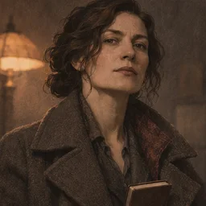
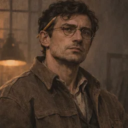
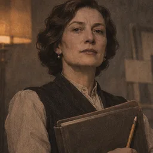
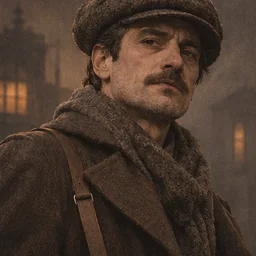
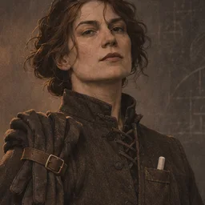

Ника Орл
плут 3 · ОЗ 24 · КД 13 · Скорость 30 фтНезависимая разыскательница, умеющая отделять наблюдение от уверенного пересказа
Пальто с заменённой подкладкой, небольшой блокнот и привычка садиться так, чтобы видеть собеседника, а не выход.
Марина попросила вас провести разговоры с цехами: студия считает знакомых работников слишком заинтересованными.
Открыть фигурку для поля
Оружие и заклинания
Оружие · Боевой посох

Тимур Клен
воин 3 · ОЗ 31 · КД 11 · Скорость 30 фтМастер сценических конструкций, приглашённый для спокойного осмотра площадки
Короткая рабочая куртка, очки в жестяном футляре, карандаш за правым ухом.
Лев однажды остановил съёмку, когда ваша бригада устала; вы хотите понять, соблюли ли для него ту же осторожность.
Открыть фигурку для поля
Оружие и заклинания
Оружие · Боевой посох

Софья Лан
волшебник 3 · ОЗ 20 · КД 12 · Скорость 30 фтСчётчица артели и терпеливая читательница несовпадающих экземпляров
Тёмный жилет, мягкая папка с двумя отделениями и тщательно подрезанный простой карандаш.
Семья Льва передала артели разрешение получить относящиеся к гибели бумаги; вы отвечаете за бережное хранение копий.
Открыть фигурку для поля
Оружие и заклинания
Оружие · Боевой посох
Яна Брук
жрец 3 · ОЗ 24 · КД 11 · Скорость 30 фтСанитарная уполномоченная съёмочных бригад
Светлый шарф, застёгнутый дорожный саквояж и спокойный голос без привычки командовать.
Вас позвали проследить, чтобы расследование не заставляло коллег заново переживать момент тревоги.
Открыть фигурку для поля
Оружие и заклинания
Оружие · Боевой посох
Аркадий Рёс
плут 3 · ОЗ 24 · КД 13 · Скорость 30 фтБывший характерный актёр и нынешний посредник между цехами
Вытертый галстук, аккуратно причёсанные седые волосы и карманное зеркало с треснувшей крышкой.
Знакомые спорят о деле за вашей спиной; вы пришли слушать их порознь, прежде чем спор превратится в раскол.
Открыть фигурку для поля
Оружие и заклинания
Оружие · Боевой посох
Мила Арж
волшебник 3 · ОЗ 20 · КД 12 · Скорость 30 фтТехник просмотровых аппаратов и звуковых дорожек
Рукава, стянутые лентой, мягкая щётка в футляре и очки, которые она снимает во время разговора.
Монтажная согласна предоставить группе место для сравнения плёнок, если кто-нибудь отвечает за сохранность материала.
Открыть фигурку для поля
Оружие и заклинания
Оружие · Боевой посох

Денис Вель
жрец 3 · ОЗ 24 · КД 11 · Скорость 30 фтОрганизатор взаимопомощи временных работников
Тёплая кепка, сумка с чистыми бланками и записная книжка, в которой адреса закрыты отдельным клапаном.
Несколько работников готовы говорить, но сначала хотят знать, кто поможет им пережить потерю смен.
Открыть фигурку для поля
Оружие и заклинания
Оружие · Боевой посох

Эстер Фон
воин 3 · ОЗ 31 · КД 11 · Скорость 30 фтБригадир сменных работников павильона
Плотные перчатки на ремне, высокая шнуровка ботинок и мел на наружном кармане.
Вы знаете цену незаписанной смены и хотите, чтобы итог расследования не переложил всю ответственность на случайных рабочих.
Открыть фигурку для поля
Оружие и заклинания
Оружие · Боевой посох